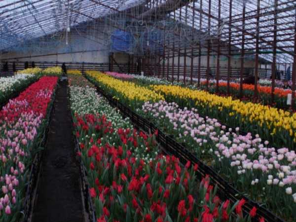
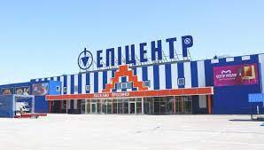
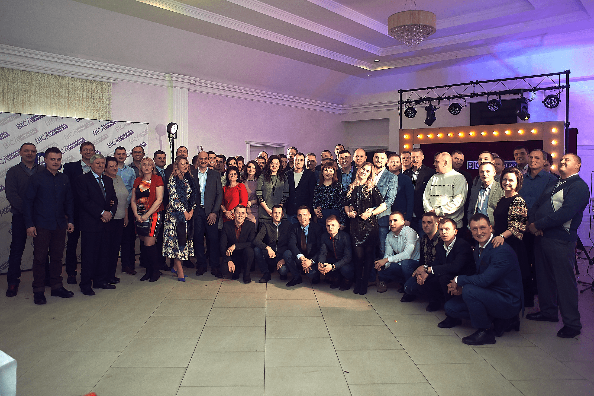

Work Experience
Worker Tulipangarden ASRamstadsletta
January 2021 - July 2021| Norway
- Growing flowers
- Planting tulips
- Making bouquets

Seller Epicentr Zhitomyr
March 2020 - December 2020| Ukraine
- Seling electric equipment
- Consultancy buyers

In 1994, Alexander and his wife began selling small ceramic tiles, which were imported from Poland. At first they sold in the market, and later began to deliver goods to small shops. In 1996, they opened the first store with an area of 25 m2 and founded the company "Cermet AGS".
Seller VISA Electro
June 2018 - March 2020 | Ukraine
- Seling electric equipment
- Consultancy buyers

Visa Electro is a company engaged in retail and wholesale of electrical equipment. We have been successfully operating on the Ukrainian market for more than 10 years. We currently have our own distribution in Zhytomyr, Kyiv, Chernihiv, Khmelnytsky, Vinnytsia, Rivne and Volyn regions. In other areas, we have distributors and are looking for new partners to attract other ways to sell our own products. We cooperate with well-known brands Feron, Bylectrica, Dekora, UltraLight, Viko, Svitex and others.